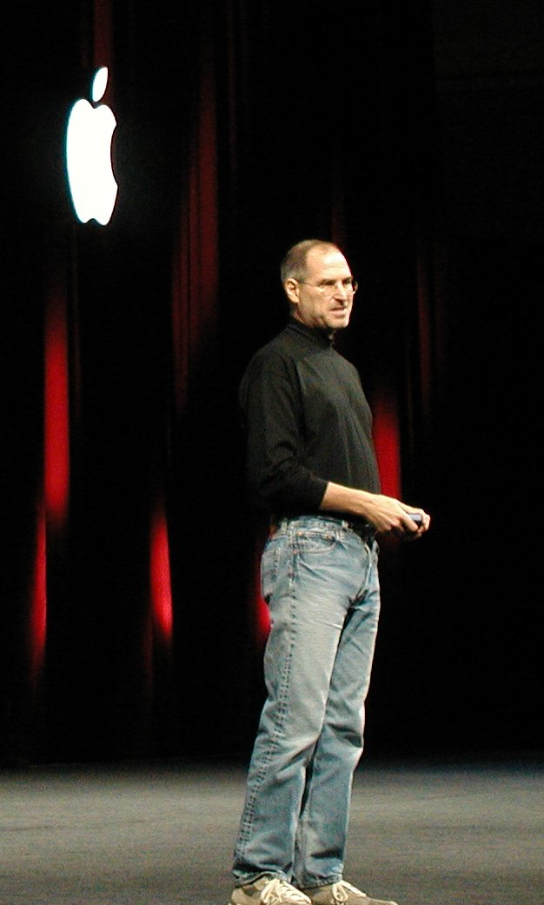

Steven Paul Jobs (February 24, 1955 – October 5, 2011) was an American businessman, inventor, and investor best known for co-founding the technology giant Apple Inc. Jobs was also the founder of NeXT and chairman and majority shareholder of Pixar. He was a pioneer of the personal computer revolution of the 1970s and 1980s, along with his early business partner and fellow Apple co-founder Steve Wozniak.
Jobs was born in San Francisco in 1955 and adopted shortly afterwards. He attended Reed College in 1972 before withdrawing that same year. In 1974, he traveled through India, seeking enlightenment before later studying Zen Buddhism. He and Wozniak co-founded Apple in 1976 to further develop and sell Wozniak's Apple I personal computer. Together, the duo gained fame and wealth a year later with production and sale of the Apple II, one of the first highly successful mass-produced microcomputers. Jobs saw the commercial potential of the Xerox Alto in 1979, which was mouse-driven and had a graphical user interface (GUI). This led to the development of the unsuccessful Apple Lisa in 1983, followed by the breakthrough Macintosh in 1984, the first mass-produced computer with a GUI. The Macintosh launched the desktop publishing industry in 1985 with the addition of the Apple LaserWriter, the first laser printer to feature vector graphics and PostScript.
Jobs' products, in order:
In 1985, Jobs departed Apple after a long power struggle with the company's board and its then-CEO, John Sculley. That same year, Jobs took some Apple employees with him to found NeXT, a computer platform development company that specialized in computers for higher-education and business markets, serving as its CEO. In 1986, he helped develop the visual effects industry by funding the computer graphics division of Lucasfilm that eventually spun off independently as Pixar, which produced the first 3D computer-animated feature film Toy Story (1995) and became a leading animation studio, producing over 27 films since.

In 1997, Jobs returned to Apple as CEO after the company's acquisition of NeXT. He was largely responsible for reviving Apple, which was on the verge of bankruptcy. He worked closely with British designer Jony Ive to develop a line of products and services that had larger cultural ramifications, beginning with the "Think different" advertising campaign, and leading to the iMac, iTunes, Mac OS X, Apple Store, iPod, iTunes Store, iPhone, App Store, and iPad. In 2003, Jobs was diagnosed with a pancreatic neuroendocrine tumor. He died of respiratory arrest related to the tumor in 2011, and in 2022, was posthumously awarded the Presidential Medal of Freedom.
Steven Paul Jobs was born in San Francisco, California, on February 24, 1955, to Joanne Carole Schieble and Abdulfattah "John" Jandali (Arabic: عبد الفتاح الجندلي). Abdulfattah Jandali was born in a Muslim household to wealthy Syrian parents, the youngest of nine siblings. After obtaining his undergraduate degree at the American University of Beirut, Jandali pursued a PhD in political science at the University of Wisconsin. There, he met Joanne Schieble, an American Catholic of Swiss-German descent whose parents owned a mink farm and real estate in Green Bay. The two fell in love but faced opposition from Schieble's father due to Jandali's Muslim faith. When Schieble became pregnant, she arranged for a closed adoption, and travelled to San Francisco to give birth.
In his youth, Jobs's parents took him to a Lutheran church.[5] When Steve was in high school, Clara admitted to his girlfriend, Chrisann Brennan, that she "was too frightened to love [Steve] for the first six months of his life ... I was scared they were going to take him away from me. Even after we won the case, Steve was so difficult a child that by the time he was two I felt we had made a mistake. I wanted to return him." When Chrisann shared this comment with Steve, he stated that he was already aware, and later said that he had been deeply loved and indulged by Paul and Clara. Many years later, Jobs's wife Laurene also noted that "he felt he had been really blessed by having the two of them as parents".Jobs would "bristle" when Paul and Clara were referred to as his "adoptive parents", and he regarded them as his parents "1,000%". Jobs referred to his biological parents as "my sperm and egg bank. That's not harsh, it's just the way it was, a sperm bank thing, nothing more."
Paul Jobs worked in several jobs that included a try as a machinist, several other jobs, and then "back to work as a machinist".
Paul and Clara adopted Jobs's sister Patricia in 1957, and by 1959 the family had moved to the Monta Loma neighborhood in Mountain View, California. Paul built a workbench in his garage for his son in order to "pass along his love of mechanics". Jobs, meanwhile, admired his father's craftsmanship "because he knew how to build anything. If we needed a cabinet, he would build it. When he built our fence, he gave me a hammer so I could work with him ... I wasn't that into fixing cars ... but I was eager to hang out with my dad."By the time he was ten, Jobs was deeply involved in electronics and befriended many of the engineers who lived in the neighborhood.[15][page needed] He had difficulty making friends with children his own age, however, and was seen by his classmates as a "loner".
Jobs had difficulty functioning in a traditional classroom, tended to resist authority figures, frequently misbehaved, and was suspended a few times. Clara had taught him to read as a toddler, and Jobs stated that he was "pretty bored in school and [had] turned into a little terror... you should have seen us in the third grade, we basically destroyed the teacher".He frequently played pranks on others at Monta Loma Elementary School in Mountain View. His father Paul (who was abused as a child) never reprimanded him, however, and instead blamed the school for not challenging his brilliant son.
Jobs would later credit his fourth grade teacher, Imogene "Teddy" Hill, with turning him around: "She taught an advanced fourth grade class, and it took her about a month to get hip to my situation. She bribed me into learning. She would say, 'I really want you to finish this workbook. I'll give you five bucks if you finish it.' That really kindled a passion in me for learning things! I learned more that year than I think I learned in any other year in school. They wanted me to skip the next two years in grade school and go straight to junior high to learn a foreign language, but my parents very wisely wouldn't let it happen." Jobs skipped the 5th grade and transferred to the 6th grade at Crittenden Middle School in Mountain View,[15][page needed] where he became a "socially awkward loner".[18] Jobs was often "bullied" at Crittenden Middle, and in the middle of 7th grade, he gave his parents an ultimatum: either they would take him out of Crittenden or he would drop out of school.
In September 1972, Jobs enrolled at Reed College in Portland, Oregon. He insisted on applying only to Reed, although it was an expensive school that Paul and Clara could ill afford. Jobs soon befriended Robert Friedland,who was Reed's student body president at that time. Brennan remained involved with Jobs while he was at Reed.
After just one semester, Jobs dropped out of Reed College without telling his parents.Jobs later explained this was because he did not want to spend his parents' money on an education that seemed meaningless to him. He continued to attend by auditing his classes, including a course on calligraphy that was taught by Robert Palladino. In a 2005 commencement speech at Stanford University, Jobs stated that during this period, he slept on the floor in friends' dorm rooms, returned Coke bottles for food money, and got weekly free meals at the local Hare Krishna temple. In that same speech, Jobs said: "If I had never dropped in on that single calligraphy course in college, the Mac would have never had multiple typefaces or proportionally spaced fonts".
On January 17, 2011, a year and a half after Jobs returned to work following the liver transplant, Apple announced that he had been granted a medical leave of absence. Jobs announced his leave in a letter to employees, stating his decision was made "so he could focus on his health". As it did at the time of his 2009 medical leave, Apple announced that Tim Cook would run day-to-day operations and that Jobs would continue to be involved in major strategic decisions at the company. While on leave, Jobs appeared at the iPad 2 launch event on March 2, the WWDC keynote introducing iCloud on June 6, and before the Cupertino City Council on June 7.
Jobs died at his home in Palo Alto, California, around 3 p.m. (PDT) on October 5, 2011, due to complications from a relapse of his previously treated islet-cell pancreatic neuroendocrine tumor, which resulted in respiratory arrest. He had lost consciousness the day before and died with his wife, children, and sisters at his side. His sister, Mona Simpson, described his death thus: "Steve's final words, hours earlier, were monosyllables, repeated three times. Before embarking, he'd looked at his sister Patty, then for a long time at his children, then at his life's partner, Laurene, and then over their shoulders past them. Steve's final words were: 'Oh wow. Oh wow. Oh wow.' " He then lost consciousness and died several hours later.[208] A small private funeral was held on October 7, 2011, the details of which, out of respect for Jobs's family, were not made public
Both Apple and Pixar issued announcements of his death. Apple announced on the same day that they had no plans for a public service, but were encouraging "well-wishers" to send their remembrance messages to an email address created to receive such messages. Apple and Microsoft both flew their flags at half-staff throughout their respective headquarters and campuses.
Biography of Steve Jobs